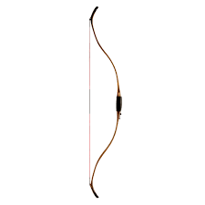

Ancient Egyptian weapons evolved over time, they started out primitive,
with single arch bows and daggers, but as time went on, they developed more
advanced weapons, for example, chariots and compound bows. At it's height, the
Egyptian army had 100,000 members (Ganeri A, Your Aincient Egyptian Homework Helper,
2004). This section is about the weapons that the egyptians used when in conflicts
Compound Bow
The compund bow was bought in by the Hyksos,
this was a significant upgrade from the old
single arch bows which had inferior range and
acuraccy (Mark J, 2017, worldhistory.org/article/1035/weapons-in-ancient-egypt).
Introduction 2nd Intermediate Period (1782 BCE - 1550 BCE) (Dhar R, 12 August 2024, historycooperative.org/egyptian-weapons)
Continutiy: Most bows (although rarer than then) nowadays have 2 arches,
rather than one.
Change: People preffer guns over bows, guns can be thought of as a variation
creating much higher speeds using gunpowder.
